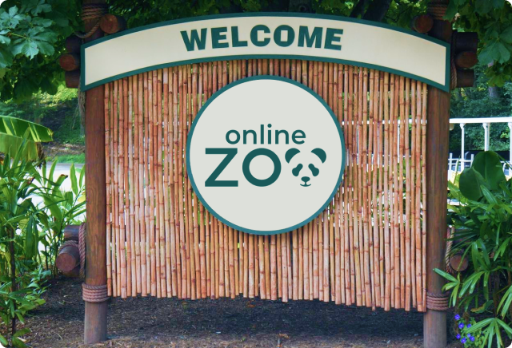
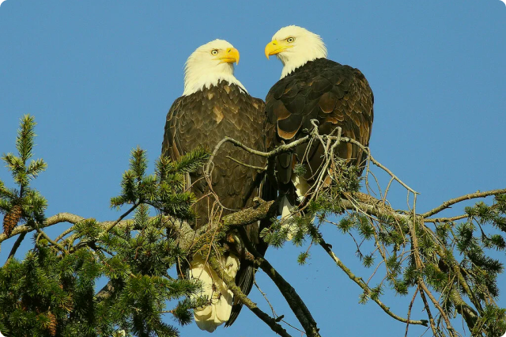
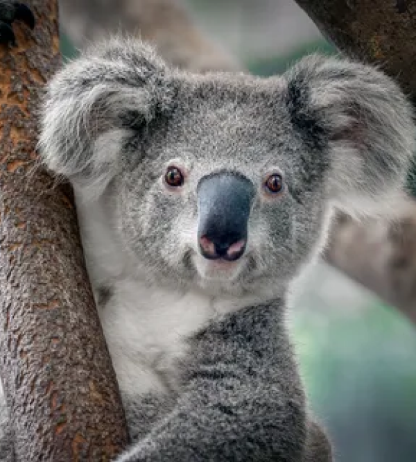

WATCH YOUR FAVORITE ANIMAL ONLINE
Explore the exciting and mysterious world of wild animals in a natural setting without leaving your home.
VIEW LIVE CAM
Welcome to the Online Zoo!
On our website, using live webcams, fans of all ages can observe various animals. Among them, are Giant pandas, eagles, alligators, forest gorillas, African lions, and others. It is the whole natural world in real-time in front of our cameras.

How we work
Online Zoo is a nonprofit committed to inspiring awareness and preservation of nature and wild animals in our zoo and worldwide. To continue these efforts, we need your help. We're so grateful to our supporters. All donations, large and small, go a long way to the conservation efforts of our pets.
Your donation makes a difference!
The Online Zoo's animal webcams are some of the most famous on the internet. Tune in to watch your favourite animals — live, 24/7!
Quick Donate
MEET SOME OUR PETS
Do you have a special place in your heart for animals? Who are your favorites? Perhaps you'd like to donate to special ones or all our pets? We think it's important for you to choose how your donation is used.
Liz

Australian Koala
The elevated walkways bring you to eye level with the koalas as they perch in their forest.
VIEW LIVE CAM